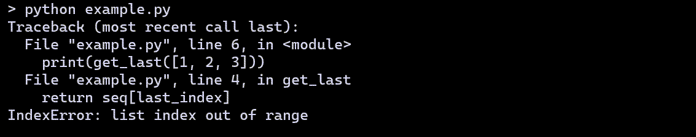

Warning
This is alpha software, currently in development. The API is subject to change without notice; many such changes are not yet included in this documentation. The aim is to have (almost) all the text updated and corrected by the time version 0.1 is released, at which time this warning will change.
Note that most screenshots have been taken with an obsolete version. We aim to replace those when work for version 0.2 has been completed.
Bienvenue 환영합니다 Bienvenido - ようこそ Welcome 歡迎光臨¶
Friendly tracebacks - Simplified Python tracebacks translatable into any language.
In a nutshell¶
There exists many Python projects intended to supplement the information given by Python traceback to make them more useful for advanced programmers. Friendly-traceback is not one of these projects.
Friendly-traceback is aimed primarily at beginners and/or at users who would like to get information about traceback in their own language. Please, see the Design section for a complete description of the goals of this project.
While Friendly-traceback can be used on its own with a specially designed REPL, a better option would be to use it together with GUI-based editors/IDE that are especially designed with beginners in mind. Currently, only one such program, Thonny, incorporate some of the features of Friendly-traceback. We explain how to use Friendly-traceback with Thonny in this document.
For the other programs designed with beginners in mind, such as Mu or, to a certain extent, Python’s own IDLE, we show what we hope is a relatively easy way to use Friendly-traceback.
A quick look¶
Let’s have a quick look at a standard Python traceback when using the REPL.
{kind=link}
Not exactly the most helpful information for beginners …
Here’s the corresponding version from Friendly-traceback’s REPL using the default configuration.

The only thing that is shown in exactly the same way is the line showing the exception name and a message. Everything else can be made available in other languages.

Hint
 Voir la section en français vers la fin.
Voir la section en français vers la fin.
Organization of this documentation¶
This documentation has been written with many different types of readers in mind.
The first part has been written with beginners and teachers in mind. We have attempted to only show the most pertinent information while giving a glimpse of more advanced features.
The third part is written with more advanced readers in mind, and the explanations given are not as detailed. However, it is assumed that advanced users will have already read and are familiar with the content of the first part and possibly the second part, dealing with the design of Friendly-traceback.
Detailed examples of all possible cases covered, using different Python versions and/or different languages (currently only English and French) are found in an appendix. Feel free to make suggestions for improvements and/or suggesting additional cases to be included.
About the version¶
Typically, the version shown at the top will have the letter “a” at the end. This means that the latest update to the documentation was made after a release with a version number without the “a” was uploaded to Pypi, and that we are working towards the next release. As a result, some features shown here may be slightly different from the version available from Pypi.
Todo
Add note about no required dependencies other than what is found in the Python standard library.
(The original entry is located in C:\Users\andre\github\friendly-traceback-docs\docs\source\design.rst, line 4.)